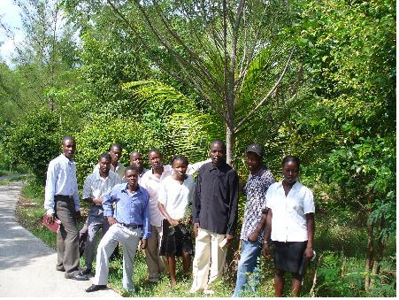
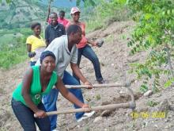
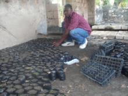
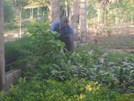

Gros-Morne (Haïti)
Gros-Morne (Haïti): Gros-Morne, Haiti: Assemblée générale le 5 juin 2010
Mesdames/Messieurs
Le comité de l’Association des Jeunes de Gros-Morne pour le Reboisement (AJGR) vous présente ses compliments et a l’honneur de vous annoncer, suite à ce grand événement qui se passait en Haïti, l’activité prévue pour l’Assemblée Générale de la dite Association est reportée pour le 5 Juin prochain à l’occasion de la Journée mondiale de l’environnement.
Confiant de votre apport à cette démarche, le comité vous prie d’agréer Madame/ Monsieur, avec ses remerciements anticipés, l’expression de sa haute considération.
Activités du jour
Dans cette occasion une grande messe sera célébrée à l’église Notre Dame de La Chandeleur et ensuite défilé en fanfare pour l’inauguration de la forêt des Jeunes à côté Collège Jean XXXIII de Gros-Morne.
Une grande Conférence sur la Journée Mondiale pressente par un spécialiste sur l’environnement.
Institutions invitées :
- Care de Gros-Morne
- Écoles vertes de Gros-Morne
- Scout d’Haïti
- Terre des Jeunes des Gonaives
Gonaïves, Haïti, Gros-Morne (Haïti), Delmas, Haïti, Léogâne, Haïti, TDJ Haïti/Ayiti: Notre coeur est tourné vers Haïti
 Nous tenons à souligner la grande tristesse et la grande inquiétude dans laquelle tout le réseau de TDJ est plongé suite aux tristes événements qui ont ravagé la ville de Port-au-Prince et le pays tout entier.
Nous tenons à souligner la grande tristesse et la grande inquiétude dans laquelle tout le réseau de TDJ est plongé suite aux tristes événements qui ont ravagé la ville de Port-au-Prince et le pays tout entier.
Le président de TDJ Gonaïves, Dieuseul Augustin (Joel) et Mario Rizzolio de la Minustah étaient par hasard à Montréal au moment du séisme. Ils tentent désespérement d'avoir des nouvelles de leur famille et de leurs amis à Port-au-Prince. Nous savons déjà que certains d'entre eux ont perdu la vie dans cette catastrophe sans nom. Nous pensons à la soeur de Joel, son mari et son bébé de quatre mois.
 Le 27 janvier nous avons appris le décès du secrétaire de Terre des jeunes Léogâne, soit Carl Presly. Tout le réseau Terre des jeunes remercie Carl pour son travail et se joint au deuil des membres restants de TDJ Léogâne, qui ont la vie sauve.
Le 27 janvier nous avons appris le décès du secrétaire de Terre des jeunes Léogâne, soit Carl Presly. Tout le réseau Terre des jeunes remercie Carl pour son travail et se joint au deuil des membres restants de TDJ Léogâne, qui ont la vie sauve.
 Le secrétaire général de l'Association des jeunes de Gros-Morne pour le Reboisement (AJGR), OXIATUS OLICE, est décédé à Port-Au-Prince. Un coup dur pour tous. TRAGELUS Wilson va bien. Nous offrons nos profondes sympathies aux amis et à la famille d'Olice. Merci pour ton courage Olice Oxiatus!
Le secrétaire général de l'Association des jeunes de Gros-Morne pour le Reboisement (AJGR), OXIATUS OLICE, est décédé à Port-Au-Prince. Un coup dur pour tous. TRAGELUS Wilson va bien. Nous offrons nos profondes sympathies aux amis et à la famille d'Olice. Merci pour ton courage Olice Oxiatus!
 Le 20 janvier 2010, nous avons appris qu'un membre AJGR/TDJGM est morte, elle s’appelle Wodeline TIDE. Nos condoléances à sa famille.
Le 20 janvier 2010, nous avons appris qu'un membre AJGR/TDJGM est morte, elle s’appelle Wodeline TIDE. Nos condoléances à sa famille.
Nous sommes également sans nouvelles de plusieurs collaborateurs de TDJ en Haïti, mais le 15 janvier 2010 au matin nous avons été soulagés d'apprendre que Antji Daniel Ouachée est bien en vie.
Nous sommes tous en deuil pour ce beau pays qui vit d'énormes souffrances.
Pour ceux qui désirent faire des dons en argent, nous suggérons de les acheminer vers des organismes tels la Croix-Rouge ou Oxfam.
Nou kenbe, nou pa lage!Lire la suite
Gros-Morne (Haïti): Inauguration de la forêt des jeunes de Gros-Morne
A L’OCCASION DU 10ÈME ANNIVERSAIRE DE L'ASSOCIATION DES JEUNES DE GROS-MORNE POUR LE REBOISEMENT (AJGR), LE 3 FÉVRIER 2010, A LIEU L'INAUGURATION DE << LA FORÊT DES JEUNES DE GROS-MORNE>> À CÔTÉ DU COLLÈGE JEAN 23 DE GROS-MORNE, PRÈS DE L’ENTRÉE DES SŒURS << KAY JEZI MARI>>.
ASSOCIATION DES JEUNES DE GROS-MORNE POUR LE REBOISEMENT (AJGR) A ÉTÉ FONDÉE LE 3 FEVRIER 2000.
Gros-Morne (Haïti): PREMIERE FETE DE L’ARBRE POUR L’ANNEE 2009 A GROS-MORNE
 La Fête de l'arbre a eu lieu sur le thème: LA QUESTION DE L’ENVIRONNEMENT DANS LA COMMUNE DE GROS-MORNE. A l’occasion de la journée mondiale de l’environnement, le 5 Juin 2009, l’Association des Jeunes de Gros-Morne pour le reboisement (AJGR), a organisé une Grande fête, nommée fête de l’arbre.
La Fête de l'arbre a eu lieu sur le thème: LA QUESTION DE L’ENVIRONNEMENT DANS LA COMMUNE DE GROS-MORNE. A l’occasion de la journée mondiale de l’environnement, le 5 Juin 2009, l’Association des Jeunes de Gros-Morne pour le reboisement (AJGR), a organisé une Grande fête, nommée fête de l’arbre.

Cette fête à eu lieu le vendredi 5 et le samedi 6 Juin 2009, sur le terrain principal de l’Association des Jeunes de Gros-Morne pour le Reboisement, un terrain de 3 hectares situé à quelques mètres de la ville de Gros-Morne dans la localité de MEDERICK. Nous avons planté ces deux jours-là 1127 arbres fruitiers et forestiers. Qualité arbres plantés:
- 505 eucalyptus,
- 5 manguiers,
- 7 orangiers,
- 10 citronniers,
- 52 pins,
- 27 chênes,
- 8 ficus,
- 509 acajous.
Comité organisateur: TRAGELUS Wilson, OXIATUS Olicé, SIMON Sonick, JOSEPH Henry-Claude, ALTENAT Henry, VALERY Pierre Antoine, OXIATUS Roges.Lire la suite
Gros-Morne (Haïti): La pépinière déborde de vie
La pépinière déborde de vie à la veille de la Fête de l'arbre 2009...



Gros-Morne (Haïti): L'arbre sera en fête dans la Ville de Gros-Morne du 5 au 6 Juin 2009
L'arbre sera en fête dans la Ville de Gros-Morne du 5 au 6 Juin 2009 Terre des Jeunes de Gros-Morne (TDJ)
Association des Jeunes de Gros-Morne pour le Reboisement…..
Association of Young people of Gros-Morne for ReforestationLire la suite
Gros-Morne (Haïti): Bèl tichan sou anviwònman
Pou lanati k’ap bèl fòk nou plante pyebwa
wouze yo chak maten pou nou ba yo lavi (bis)
1 - Gran papa nou yo te plante ooo
se s’ak fè n’ap viv jodi-a ooo
enou menm si nou pa plante pitit nou yo p’ap onore-n (bis)
2 - Pyebwa yo chaje enpòtans ooo
yo la pou fè lapli tonbe ooo
yo la pou pwoteje plant yo nan sezon chalè ak solèy (bis)
3- Nou jwenn entèlijans Bondye ooo
ki manifeste nan lespri-n ooo
se pou nou pratike-l chak jou nan bèl aksyon yo n’ap poze (bis)
Chan II
Adje peyi nou pou jan w te bèl etranje yo te rele w Paradi tèlman w te fre koulye a gade w depafini akoz pitit ou yo fin debwaze w.
1- Lè nou gade sous dlo nou yo fin disparèt nou menm AJGR lè-n reflechi nou wè fò-n plante pyebwa, paske nan 20 tan ankò se vwazin k’ap pote dlo bannou.
2- Nan tan lontan nou te kon-n wè anpil zwazo akoz anpil pyebwa kite genyen, paske pyebwa k te genyen yo, yo koupe yo, san yo pa replante.
3- Nou desann Lavil n’al chèche lavi sa pi mal pou nou. Nou menm AJGR lè-n reflechi nou wè fòk nou moute mòn pou-n plante pyebwa paske pyebwa se lavi.Lire la suite
Gros-Morne (Haïti): 9E ASSEMBLÉE GÉNÉRALE DE L’ASSOCIATION DES JEUNES DE GROS-MORNE POUR LE REBOISEMENT (AJGR)
AJGR ki se Association des Jeunes de Gros-Morne pour le Reboisement egziste depi Lane 2000, jou kite 3 fevriye, yon jou tankou jodi-a. Egzakteman, Mardi 3 février 2009 sa-a fè nou genyen 9 lane depi yon lide pou rebwaze Gwo-Mòn te danse nan tèt nou. Lide sa-a te bèl, nou youn lòt fè lide sa-a danse nan tèt Jèn parèy nou,sa-a fè n’ap pran konsyans chak jou pi plis sou eta degradasyon anviwònman an.
Depi moman sa-a, nou kenbe, n’ap kenbe, n’ap kontinye kenbe, n’ap toujou kenbe, pou zafè rebwazman an nan Gwo-Mòn vin tounen yon reyalite tout bon vre. Ak mezi ankadreman nou jwenn nan men moun ki pa Ayisyen eki entèrese ak pwojè anviwònman an, sa fè-n vin picho toujou pou nou vin tounen yon sekirite pou anviwònman an k’ap fi-n degrade.
Nou fè fraz sa-a tounen pa nou :<<Pa mande Peyi-a sa l’ap fè pou nou,men ki sa nou menm n’ap fè pou Peyi nou>> Pandan lane 2001-2002 men ki sa nou te reyalize ki se objektif pou-n rive reyalize sa ki vi objektif nou.Lire la suite
Gros-Morne (Haïti): YON TI ISTWA SOU ANVIWONMAN
-Jodi-a mwen pra-l rakonte nou istwa yon ti Nyaj. Ti Nyaj sa-a te fèt sou lanmè.Yon jou, li t’ap pwomennen li wè yon bagay tou nwa byen lyen. Li anvi al wè sa li ye.Kè li kontan anpil.Li t’ap avanse vit… Men lè li pwoche sa li wè fè kè li tris anpil.Li wè yon tè sèch.Li wè moun k’ap swe travay tè-a. Y’ap eseye plante, men tout jefò yo p’at sèvi anyen. Se lave men, siye-l atè. Solèy t’ap boule tout bagay moun yo kòmanse dekouraje. Kèk nan yo chita, men nan machwè, yo di :se lafen defen, lamizè la pou toutan.
Youn nan moun yo gade anlè, li wè yon ti Nyaj k’ap pase. Li di :”O Bondye, si Ti Nyaj sa-a te ka bannou yon ti dlo. Tout timoun yo pran rele lapli, vini vini m’ap ba ou bonbon Ti Nyaj la reponn : zanmi m yo mwen ta kontan bannou ti gout dlo, men annou jwenn kèk pye bwa pou-m ka pete pòch dlo-a.
Moun yo gade anwo yo gade anba yo pa wè yon sèl pyebwa. pye mango yo kite rete mwa pase-a, yo koupe yo pou yo fè chabon. Tout moun ap plenyen ‘’.Mezanmi, gade yon chans nou pèdi non !
Van an kontinye pouse Ti Nyaj la pi devan.Lè li rive dèyè mòn nan, li wè kèk pye bwa. Li pwoche bè yo,li pike desann, li desann jouk li kontre ak tèt pye bwa yo. Atò moun yo tande yon sèl gwo kout loray ki fèt nan syèl la. Pòch la pete epi Ti Nyaj la kòmanse voye dlo tou patou.Lire la suite
Gros-Morne (Haïti): Une rencontre productive à Gros-Morne
 Ce mardi 3 février 2009 au parc forestier de Jean XXIII de Gros-Morne, une localité située à quelque kilomètres de l’entrée nord de la ville des Gonaives, a eu lieu à la 9e assemblée générale de l’Association des Jeunes de Gros-morne Pour le Reboisement (AJGR). Pour renouveler sa volonté de travailler avec les jeunes haïtien et du monde entier, Terre des Jeunes a pris part a cette assemblée qui avait réunis pas mal de personnalités de plusieurs secteurs de la vie courante de cette commune du département de l’Artibonite, citons les Scouts d’Haïti, les représentants de l’église Catholique de la région et les écoles pour ne citer que cela. Nos deux organisations ont affiché leur vif intérêt commun pour la lutte au reboisement avec la jeunesse du monde entier.
Ce mardi 3 février 2009 au parc forestier de Jean XXIII de Gros-Morne, une localité située à quelque kilomètres de l’entrée nord de la ville des Gonaives, a eu lieu à la 9e assemblée générale de l’Association des Jeunes de Gros-morne Pour le Reboisement (AJGR). Pour renouveler sa volonté de travailler avec les jeunes haïtien et du monde entier, Terre des Jeunes a pris part a cette assemblée qui avait réunis pas mal de personnalités de plusieurs secteurs de la vie courante de cette commune du département de l’Artibonite, citons les Scouts d’Haïti, les représentants de l’église Catholique de la région et les écoles pour ne citer que cela. Nos deux organisations ont affiché leur vif intérêt commun pour la lutte au reboisement avec la jeunesse du monde entier.
En cette joyeuse circonstance Terre des Jeunes a remis une quantité d’ouvrages « Agir pour l’environnement » aux responsables de AJGR et les Scouts pour renforcer la promotion de l’éducation à l’environnement en Haïti en complicité avec la Fédération des amis de la nature (FAN).
Tous les participants à la rencontre ont félicité et remercié l’équipe Terre des Jeunes pour sa contribution dans des actions liées à un changement de comportement au niveau de la jeunesse haïtienne et spécialement celle de Gros-Morne.
Les Scouts de Gros-Morne-Haïti ont promis dorénavant de travailler en étroite collaboration avec l’équipe des Terre des Jeunes dans l’idée de prendre une nouvelle orientation dans la lutte pour le reboisement d’Haïti.
Ayiti se volonte’m ak volonte’w ki pou change’l
Augustin pour la délégation de TERRE DES JEUNESLire la suite
Gros-Morne (Haïti): Ann kole tѐt nou ansanm pou n lite kont Ewozyon
Gros-Morne (Haïti): Tous ensemble pour un monde plus vert
« REBOISEMENT DE GROS-MORNE »
R estons attachés a la beauté de la nature,
E lle est le seul moyen d’assurer notre vie.
B ois plantés protègent notre vie comme la clôture,
O rganisés contre les bêtes à bord d’un champ.
I irresponsabilité de l’Haïtien rend le pays dépéri….
S ans tenir compte des conséquences, nous avons souffert.
E ngageons-nous ensemble pour avoir une nature fleurie.
M orne, plaine, plateau, tout doit être reboisé.
E n nous associant, nous les Gros-Mornais, nous sommes surs que
N ous luttons contre l’érosion, d’après notre idée.
T endrement. Gros-Morne sera clairement un paradis
D’ après notre volonté, nos désirs. L’année 2015
E st la référence de notre visée. Nous reboisons
G ros-Morne, juste pour conserver l’honneur initial d’Haïti.
R eboisons avec les yeux fermés tout en philosophant.
O organisation internationale nous coordonne fort
S sans doute, elle a la sensibilité de notre situation.
M onde tout entier ne pourrait pas s’embellir sans être reboisé.
O ubliez-vous la bonté d’Haïti lors de la découverte ?
R éellement, elle était recouverte d’arbres de toutes sortes.
N ous espérons qu’avec notre volonté, notre union
E ternel nous aide a avoir le sentiment patriotique.
Membre de l’A.J.G.R.Lire la suite
Gros-Morne (Haïti): Un très beau message d'espoir de Gros-Morne. Lisez ceci!

Haïti : la terre s’effondre sous nos pieds, des cris d’alarme sont lancés. Haïti non seulement l’un des pays les plus pauvres du monde mais aussi l’un de ceux ou les ressources naturelles sont les plus dévastées, les plus épuisées. La dégradation de l’environnement, due principalement au phénomène de déboisement, a pris de telles proportions que les experts parlent d’une catastrophe écologique et que certains prédisent la disparition de toutes les ressources forestières du pays d’ici une dizaine d’année, à moins que l’on prenne des mesures drastiques pour renverser les tendances actuelles, ce qui suppose une stabilité politique inexistante actuellement. Le cas d'Haïti révèle clairement les relations entre l’écologie et la politique :il met à nu les liens entre la dégradation de l’environnement et les formes de domination tant internes qu’externes.
A Gros-Morne, un jeune,TRAGELUS Cherubin, ayant participé, avec le concours des deux Paroisses de Sherbrooke jumelées avec la notre, a un séminaire de formation ou il a été fortement sensibilisé à la situation dramatique d’Haïti. Il a formé une Association de jeunes « A.J.G.R »(Association des Jeunes de Gros-Morne Pour le Reboisement), afin de les mettre en action pour changer la situation de la région. Ces jeunes très motivés travaillent de toutes leurs forces à la conscientisation de la population,et se sont personnellement engagés dans un important projet de reboisement qui est source d’espoir pour notre localité. Voici ce que l’un d’entre eux, TRAGELUS Wilson, écrit aux autres jeunes de chez nous :Lire la suite
- « premier
- ‹ précédent
- 1
- 2
- 3
- 4